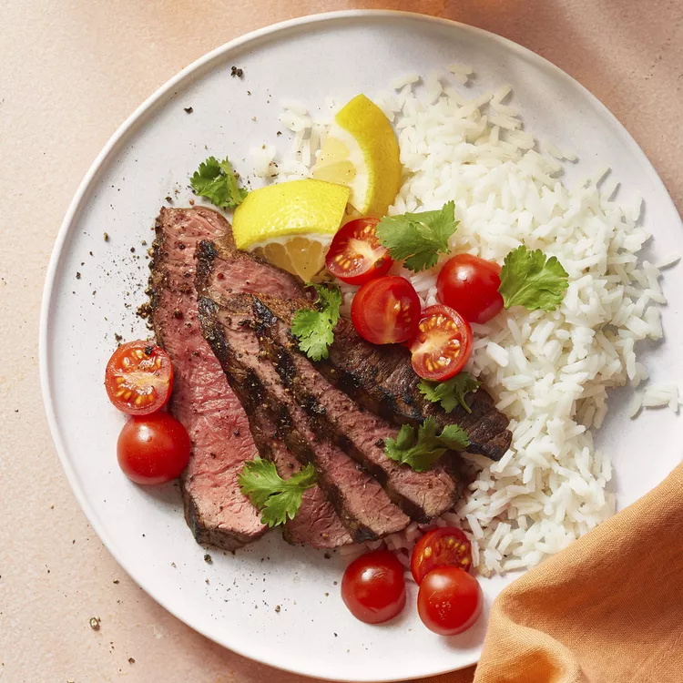

Picanha

Description:
Picanha is a very tasty brazilian cut of meat, juicy and soft.
Ingredients:
- 3 cloves garlic cloves, crushed, or more to taste
- 1 teaspoon kosher salt, or more to taste
- 1 pound beef top sirloin, trimmed of excess fat
- ¼ cup lemon juice
- 1 tablespoon olive oil, or as needed
Preparation:
- Mix crushed garlic and salt together in a bowl until combined into a paste.
- Rub garlic paste onto meat until covered. Place into a bowl; cover with lemon juice.
Marinate until the meat has absorbed desired flavor, 30 minutes to 4 hours.
Remove meat from the lemon juice. Baste with olive oil.
- Preheat an outdoor grill for high heat and lightly oil the grate.
- Cook meat on the preheated grill, turning frequently until the outer edges are charred and center is uncooked, about 5 minutes.
Remove from heat; slice off charred edges, cutting against the grain.
Return the uncooked center portion of the meat back to the grill.
Cook until the meat begins to firm and is hot and slightly pink in the center, about 5 minutes per side.
An instant-read thermometer inserted into the center should read 140 degrees F (60 degrees C).